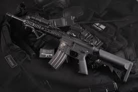

Es un dispositivo destinado a propulsar uno o múltiples proyectiles mediante la presión generada por la combustión de un propelente. De este modo, se excluyen dentro de este término los dispositivos que lanzan proyectiles por medio de un gas previamente
comprimido. Como toda arma, su función original y más común es provocar la muerte o la incapacitación casi instantánea de un animal, además del humano; en el caso de las armas de fuego, estas pueden hacerlo desde cierta distancia, variable
según el tipo de arma y las circunstancias (viento, humedad, etc.). Algunas armas de fuego están específicamente diseñadas para ser no letales y causar una incapacitación transitoria o tener efectos disuasorios, sirviendo como armas antidisturbios;
otras se destinan a usos diversos no vinculados a la caza, el combate o la ejecución de la pena de muerte.

A las armas de fuego largas (como los rifles) se les suele agregar una bayoneta, la cual es un arma blanca muy afilada, que es utilizada para el combate cuerpo a cuerpo en caso de no tener balas, lo cual aumenta la peligrosidad de estas.
En las armas de fuego antiguas el propelente era la pólvora negra; en cambio, en las modernas se utiliza pólvora sin humo o cordita. En algunos casos se usa pólvora negra para armas antiguas, incluso hoy en día por cuestiones estéticas.
A diferencia de las armas blancas en las que no se requiere de ninguna licencia para poder portarlas, para poder portar armas de fuego se requiere una licencia especial que permita su uso. También requieren ser recargadas una vez que se quedan sin cartuchos,
mientras que las armas blancas no requieren ser recargadas.
Las armas de fuego a diferencia de las armas blancas, hacen ruido al momento de realizar los disparos, y para evitar que hagan ruido al momento de efectuar los disparos se les coloca un silenciador (supresor) para que no hagan ruido al momento de disparar.
Para segir obeniendo mas informacion sobre el tema, es necesario que inicies sesión ó si no tienes una cuenta, registrate para continaur.
a!8xOpCpEkAinrw73J!y